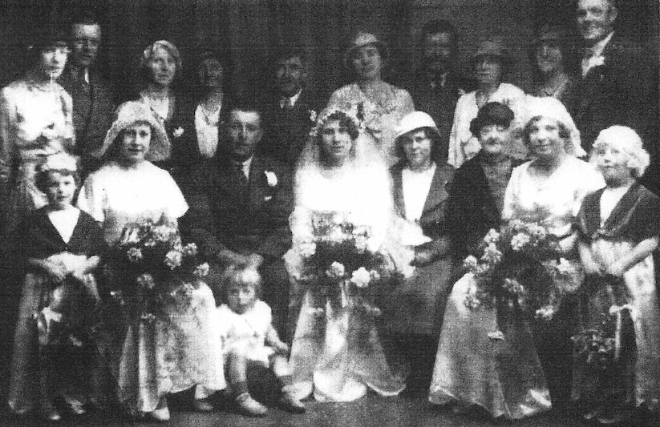

Frederick James Cowell 1909 - 1953
[ Home ] | [ Calendar ] | [ Surnames Index ] | [ Errors ] | [ Family History ]A lorry driver and the child of James Cowell (a seaman collier with the whitstable shipping company) and Emily Lawrence, Frederick Cowell, the uncle of Nigel Horne, was born in St Lawrence, Thanet, Kent, England on 16 Apr 19091,2,3,4,5 and married Doris Maxted (with whom he had 3 children: Patricia Mary, Maureen Joyce and Melvin James) at St George's Church, Ramsgate, Kent, England on 31 Mar 19347.
During his life, he was living at 13 Ashburnham Road, St Lawrence, Thanet, Kent on 2 Apr 19119; at 7 Pouces Cottages, Minster, Thanet, Kent on 19 Jun 19212; at 5 Pouces Cottages, Minster, Thanet, Kent on 29 Sept 19393 on the same road as his mother who was living at 7 Pouces Cottages - less than a mile from his sister Joyce Cowell who was living at 7 Pouces Cottages, Minster, Thanet, Kent; and at 20 Freeman's Road, Minster, Thanet, Kent in 19538.
He died on 19 Jun 1953 at Garage at Settersfield's Yard, 5 Tothill Street, Minster, Thanet, Kent5,6 (asphyxia due to hanging) and was buried at Minster Cemetery, Tothill Street, Minster after 19 Jun 19535.
Parents
- James Frederick was born on 2 Mar 1887
- Emily Jane was born on 30 Sept 1887
Children
- Patricia Mary was born c. May 1937
- Maureen Joyce was born on 9 Feb 1946
- Melvin James was born on 9 Feb 1946
Citations
- 1911 England Census Online publication - Provo, UT, USA: Ancestry.com Operations, Inc., 2011.Original data - Census Returns of England and Wales, 1911. Kew, Surrey, England: The National Archives of the UK (TNA), 1911. Data imaged from the National Archives, London, England.
- 1921 Census Of England & Wales - Findmypast (was age 12 and the son of the head of the household)
- 1939 Register - Findmypast (was the head of the household)
- England & Wales, FreeBMD Birth Index, 1837-1915 Online publication - Provo, UT, USA: The Generations Network, Inc., 2006.Original data - General Register Office. England and Wales Civil Registration Indexes. London, England: General Register Office. © Crown copyright. Published by permission of the Cont
- UK and Ireland, Find A Grave Index, 1300s-Current Ancestry.com Operations, Inc.
- England & Wales, Death Index: 1984-2005 Online publication - Provo, UT, USA: The Generations Network, Inc., 2007.Original data - General Register Office. England and Wales Civil Registration Indexes. London, England: General Register Office. © Crown copyright. Published by permission of the Cont
- England & Wales marriages 1837-2008 - Findmypast
- 1953 Kelly's Thanet Directory
- 1911 Census for England & Wales - Findmypast (was age 1 and the son of the head of the household)
Media
Frederick_James_Cowell

Minster FC Clipping

Frederick James Cowell - grave

James Sidney Cowell - Lydia Florence Bonner - marriage
Frederick James Cowell

Frederick Cowell - Doris Maxted - gravestone

Frederick James - Minnie Maxted - marriage

Thanet Advertiser 3 Apr 1934

Thanet Advertiser 28 Apr 1936

East Kent Times and Mail - 24 Jun 1953

1953 Kelly's Thanet Directory

1911 England, Wales & Scotland Census Transcription - GBC-1911-RG14-04528-0357-1
England & Wales births 1837-2006 - BMD/B/1909/2/AZ/000134/145
1911 England, Wales & Scotland Census Transcription - GBC-1911-RG14-04528-0357-4
1939 Register Transcription - TNA-R39-1820-1820G-008-36
England & Wales marriages 1837-2008 - BMD/M/1934/1/AZ/000186/077
England Billion Graves cemetery index - US/BMD/BILLION/009204485
England & Wales deaths 1837-2007 - BMD/D/1953/2/AZ/000192/021
1939 Register - TNA-R39-1820-1820G-008-35
Family Tree

Map
Generated by ged2site. Last updated on Jul 3, 2024
Known Issues
Joyce Soper (née Cowell) residence is same location probably should be recorded as the same address (' 7 Pouces Cottages, Minster, Thanet, Kent, England'/' 5 Pouces Cottages, Minster, Thanet, Kent, England') in 1939
Listed in the residence for 1953, but spouse Doris Maxted is not
Adding date of burial as 'aft 19 Jun 1953'